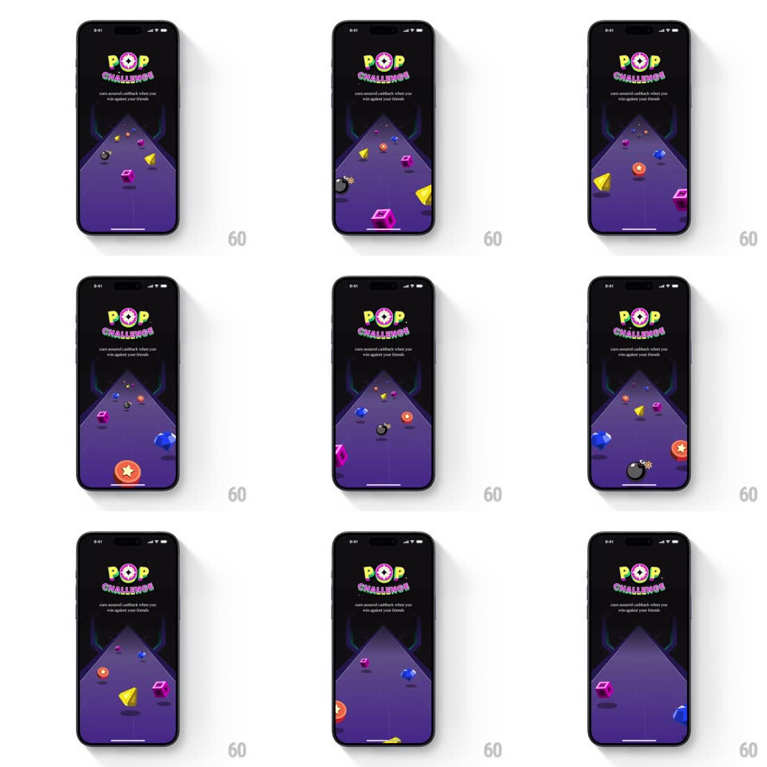

Media
Frame-by-frame

Rebuild this interaction 1:1: CRED's Pop Challenge intro - a dark purple 3D perspective floor stretches away from the viewer like a runway while glossy game objects (gems, cubes, cones, orbs, a bomb) fly toward the camera, recede to the horizon, and loop under the "POP CHALLENGE" logo.

Rebuild this interaction 1:1: CRED's Pop Challenge intro - a dark purple 3D perspective floor stretches away from the viewer like a runway while glossy game objects (gems, cubes, cones, orbs, a bomb) fly toward the camera, recede to the horizon, and loop under the "POP CHALLENGE" logo. ## Integration Integration: stack-agnostic spec - springs given as stiffness/damping, timed motions as duration + curve; map every value to your framework and animation library of choice. ## Scene Black screen, top: "POP CHALLENGE" wordmark (POP with a star inside the O, CHALLENGE curved beneath) and the line "earn assured cashback when you win against your friends". Below: a purple trapezoid floor in one-point perspective converging to a glowing horizon, with neon side rails. ## Motion spec Pattern: looping 3D fly-through on a perspective floor. - Objects spawn small at the horizon (~0.2 scale) and travel toward the viewer, scaling up to ~1.4 as they exit past the bottom/side edges (~1.6s per object, linear depth travel, ease-in on scale). - Each object tumbles slowly (rotate 360deg over its flight) with a glossy plastic material and soft drop shadow on the floor. - Objects follow slight lateral drift paths so the field fills the floor; ~6-8 objects in flight at once, staggered spawns (~250ms apart). - The loop is seamless: new spawns begin as others exit, no visible restart. ## Calibration - Depth is sold by scale + shadow, not blur - keep objects crisp. - Perspective floor stays fixed; only the objects move. ## Reduced motion Static composition: objects frozen mid-field with a gentle opacity pulse on the floor glow (2s loop). ## Don't miss - Objects exit past the camera plane (off the bottom/side edges), never reverse direction. - The horizon glow stays constant - it anchors the perspective.